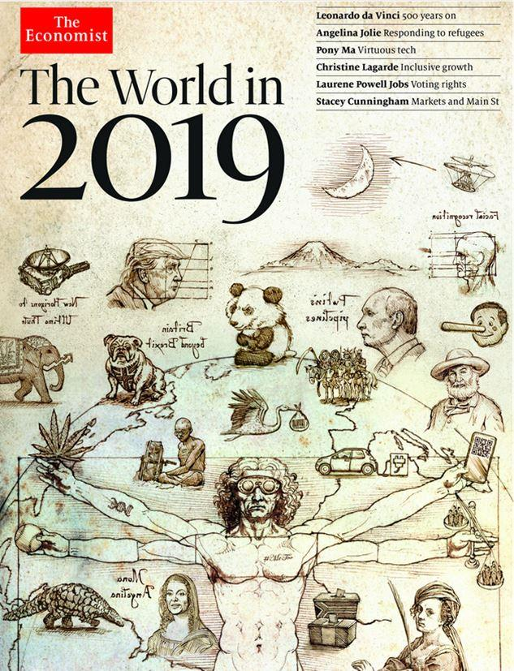
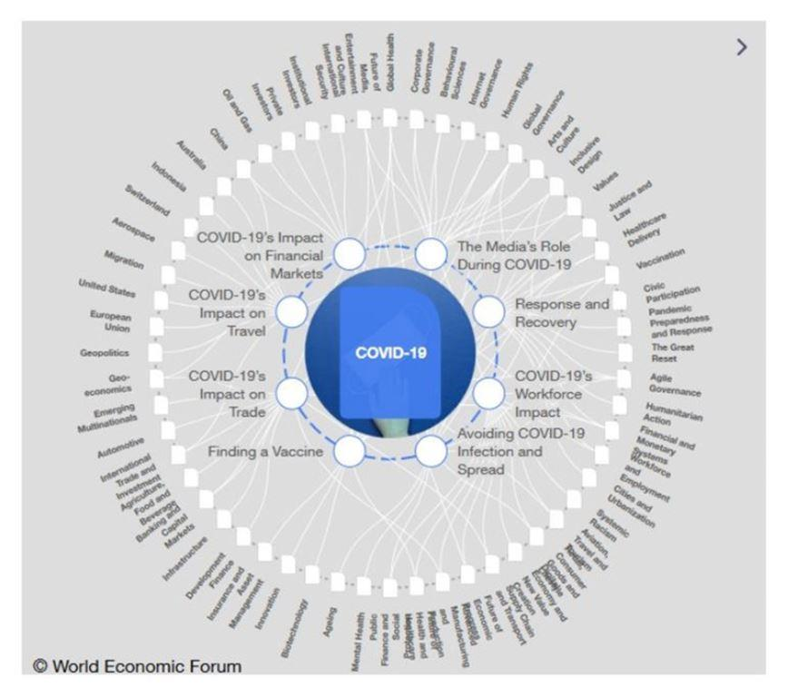
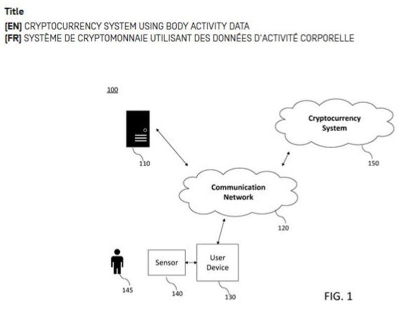

Décryptage de la « Plandémie » Covid-19 : un exercice d’ingénierie sociale machiavélique
par Amar GOUDJIL
Tout le monde a pu voir récemment un certain nombre de très grands médecins et de professeurs en infectiologie, immunologie, génétique ou virologie se succéder sur les plateaux de télévision et de radio pour expliquer qu’ils ne comprenaient rien à la gestion de cette crise du COVID et aux différentes situations politiques paradoxales qui se sont enchainées dès l’apparition du SARS-COV2 dans le monde.
Le professeur Christian Perronne, brillant médecin-professeur français exerçant à l’hôpital de Garches en région parisienne est l’un d’entre eux. Apparaissant de plus en plus interloqué émission après émission, il vient de publier récemment un livre dans lequel il recense « les erreurs majeures » que le gouvernement français aurait commis durant cette crise.
Or Monsieur Perronne fait radicalement fausse route comme d’ailleurs la plupart « des gens normaux » qui pensent que Boris Johnson s’est retrouvé à côté de la plaque ou encore qu’Agnès Buzin et son Comité scientifique « se sont retrouvés dépassés ».
Le souci c’est qu’en réalité, les gouvernements de la planète n’ont commis aucune erreur même si c’est ce que l’on voudrait bien nous faire croire. Ils n’ont fait que suivre les consignes qui leur étaient données par le Conseil Mondial 1 lequel est sous l’emprise totale des eugénistes et malthusianistes tels que Bill Gates ou David Rockfeller.
Au total, ce ne sont pas moins de 194 états dans le monde qui ont ratifié le Règlement Sanitaire International (RSI – 2005) 2 de l’Organisation Mondiale de la Santé (OMS). Règlement, rappelons-le, qui prévoit qu’en cas de crise sanitaire majeure, tous les états membres s’engagent à respecter toutes les consignes émanent du Conseil Mondial et à faire en sorte que toutes ces consignes priment sur les lois et les codes juridiques des états.
Mais nous allons développer tout ceci un peu plus loin car c’est très important, d’autant plus que le Parlement Européen a fait promulguer une loi extrêmement dangereuse le 10 juillet 2020 afin de permettre la vaccination des individus et de leur inoculer des OGM 3 dont on ne sait absolument rien.
Qu’il s’agisse de Christian Perronne en France, d’Alberto Zangrillo 4 en Italie ou de Denis Rancourt au Canada, on est toujours le même cas de figure. Celui où des gens innocents, naïfs et fondamentalement bons ne voient jamais « le Mal » tel que l’on devrait le voir, c'est-à-dire dans son essence la plus absolue et la plus machiavélique qui soit. Ils en sont incapables car ils pensent que tout le monde est comme eux.
Ils ne voient que des imperfections, des incohérences, des incompétences et des erreurs commises. Et comme leur nature est intègre et qu’ils sont des gens fondamentalement honnêtes, ils sont incapables de percevoir et de comprendre que cette crise du COVID vient de très loin et qu’elle a été intégralement orchestrée de A à Z.
Est-ce que quelqu’un se rappelle de la cérémonie macabre de l’ouverture des Jeux Olympiques de Londres en 2012 5 ? Non ? Et bien il faut la revoir. Le thème tournait autour d’une pandémie et pour tous les passionnés d’eurythmie, l’événement était truffé d’images satanistes et maçonnes.
Alors prémonition, prédiction ou hasard ?
En termes d’hypothèse tout est possible mais nous allons voir que rien n’est dû au hasard. Avec le recul, nous pouvons même penser que toutes ces histoires de nems de chauve-souris mal cuites et de pangolin mal grillé pour être revendu par un « Street cooker » dans un marché de Wuhan ne sont que des histoires pour enfants. Rien d’autre.
La preuve est que nous sommes déjà à la mi-septembre et nous n’avons toujours pas trouvé de patient « zéro ». Tout nous laisse penser que nous ne le trouverons pas.
La réalité est bien plus scabreuse, bien plus machiavélique et bien plus maléfique que tout ce à quoi l’on veut nous faire croire.
Le hasard, comme le disait Einstein, « c’est Dieu qui se promène incognito » et en arabe, ce terme désigne la chance ou le succès. C'est-à-dire, au sens probabiliste du terme, le fait qu’un événement considérablement improbable et incertain se réalise avec une précision divine.
Si tel est peut-être le cas dans le domaine de la physique quantique et relative ou encore dans le domaine des statistiques, c'est-à-dire dans ces domaines des sciences exactes où Dieu se promène partout entre la masse du proton, la fleur de vie et le nombre d’or, ce qui relève de la certitude, c’est que dans le domaine de la physique des affaires politiques, de l’ingénierie sociale et du contrôle des populations -et des plandémies évidemment-, Dieu n’y est pour rien.
L’homme en revanche y est quasiment pour tout et les crises ne sont bien souvent rien d’autres que des zones d’incertitudes, de risques et d’opportunités dans lesquelles ceux qui maîtrisent les événements et le temps, réalisent de formidables sauts qualitatifs. Ce qui veut bien dire que les crises sont délibérément organisées et déclenchées à des fins précises et aux moments voulus.
Dans la réflexion, la planification, l’organisation, le contrôle des médias, la manipulation génétique, la recherche d’armes biologiques et bactériologiques, la dissémination délibérée d’un virus ou derrière un lockstep économique et un lockdown des populations, l’homme est partout. Il pense à tout.
Qu’il s’agisse du conditionnement éducatif de nos enfants, de la manipulation des foules, de la répression et de l’intimidation des groupes réactionnaires comme ce fut le cas en France avec les gilets jaunes ou qu’il s’agisse de terrorisme affectif, l’homme pense vraiment à tout.
Pour vous convaincre par les sentiments, par exemple, la fabrique du consentement vous répétera, jusqu’à ce que vous le répétiez vous-même à vos semblables, par mimétisme social ou par amour de la servitude volontaire, que vous ne devez surtout pas rendre visite à vos grands-parents dans leur maison de retraite au prétexte que vous pourriez les tuer en leur transmettant un virus mortel.
Tous les moyens de communication le martèlent : leur isolement et le vôtre, sont pour votre bien.
Un peu comme si Orwell vous disait que « la guerre c’est la paix, la liberté c’est l’esclavage, l’ignorance c’est la force ».
Sans doute est-ce là encore un non sens qui créé évidemment de la dissonance cognitive mais beaucoup le croit. La naïveté des hommes est sans limite.
Qu’importe que ceux qui nous aiment et qui ne vivent maintenant que pour voir leurs petits enfants grandir meurent de solitude, de stress et d’angoisse, de soif, d’abandon ou de désespoir, l’important est que vous, vous ne soyez pas responsable de leur mort.
D° Anthony FaucyEn France, le 27 mars 2020, le gouvernement n’a pas hésité à interdire le traitement par hydroxychloroquine des patients atteint de la COVID-19 6 basant son décret sur l’étude truquée de la revue « The Lancet » et si les responsables de cette revue ont reconnu leur erreur, le gouvernement lui n’a pas changé d’avis. Déclarant ainsi dangereuse, une molécule prescrite depuis plus de 60 ans à travers toute la planète et dont le Docteur Fauci disait, en 2005 dans une publication scientifique 7, que cette molécule était d’une efficacité redoutable pour traiter le SARS-COV1 mais aussi tous les coronavirus.
Alors complot contre la santé 8 ou hasard de calendrier ?
Il y a quelques jours, le New York times publiait encore un article dans lequel l’auteur expliquait que le confinement avait tué 10 fois plus de gens que le virus lui-même 9 mais cette information est passée totalement inaperçu dans les médias européens.
Par le terrorisme émotionnel, pour vous donner un autre exemple, la fabrique médiatique du consentement vous fera toujours croire que si vous ne voulez pas que votre bébé meure dans d’atroces souffrances, vous devez impérativement le vacciner contre une bonne douzaine de maladies et ce, avant même que son corps ait acquis sa propre immunité.
Qu’importe que votre enfant devienne plus tard autiste ou que les effets secondaires irréversibles de ces vaccins le rendent stérile ou développent chez lui, 30 ou 40 ans après, toutes sortes de maladies neuraux-dégénératives qui seront beaucoup plus graves que les maladies dont il est censé être immunisé.
L’important, pour tous ces ministres de la santé qui ne sont en réalité rien d’autres que les représentants commerciaux des grands firmes pharmaceutiques, est juste que vous envoyiez une bonne ribambelle de vaccins dans le corps de ce petit être encore fragile et innocent. Cet incroyable miracle de la nature.
Seul compte pour eux leur volume de ventes, la rentabilité des investissements consacrés à la recherche et au développement et la hausse du cours de l’action de la société 10.
L’homme de pouvoir et assoiffé de contrôle, a toujours la fâcheuse tendance à toujours vouloir se prendre pour le Créateur et à toujours vouloir tout manipuler et refaire à sa place et je ne parle pas là des chefs d’état et des gouvernements qui ne sont que de simples exécutants. Je parle de ceux qui ont réellement le pouvoir. Ceux qui financent les bourses d’études et les campagnes électorales de ceux-là mêmes qui deviendront ensuite leurs débiteurs. Ceux dont on ne parle jamais.
Pourtant ces acteurs de l’ombre impriment la monnaie et décident de votre paix si vous leur contractez un prêt ou installez une de leurs banques centrales sur votre territoire. Le cas échéant, comme ce fut le cas en Libye, ils décident de vous renvoyer à l’âge de pierre.
« Le monde », disait Nicholas Butler, « se divise en 3 catégories : un très petit nombre qui fait se produire les événements, un groupe un peu plus important qui veille à leur exécution et les regarde s’accomplir, et enfin une vaste majorité qui ne sait jamais ce qui s’est produit en réalité ».
Ce que nous proposons ici, c’est une grille d’analyse de la situation d’aujourd’hui car oui, l’homme de pouvoir et de contrôle souhaite tout contrôler. Surtout quand il s’agit de contrôler l’avenir et l’évolution démographique et génétique de notre espèce.
L’opération COVID-19 est une pure opération d’ingénierie sociale et nous allons le voir.
Derrière la terreur et la psychose, plus de contrôle et encore moins de liberté
Les eugénistes et les malthusiens disent souvent que rien n’est plus dangereux pour notre planète et notre avenir que la surpopulation.
À Alberton, dans l’état de Géorgie aux États-Unis, ces grands penseurs de l’avenir de l’humanité ont même gravé cette recommandation démographique dans le marbre et pour être bien sûr que personne ne l’oublie, ils l’ont faite graver et écrire en 8 langues sur 6 énormes blocs de marbre ne pesant pas moins de 108 tonnes.
« Maintenez l’humanité en dessous de 500 millions d’individus en perpétuel équilibre avec la nature 11».
Très bien et merci du conseil mais nous sommes actuellement 7,5 milliards d’individus et pour atteindre cet objectif, je pense que nous avons ici « un léger » problème. Alors comment faire…
John Holdren et Paul et Anne Ehrlich ont apporté des solutions. Ils les ont même écrites et publiées dans un livre qui s’appelle « ECOSCIENCE 12». Un livre fou dans lequel on peut y lire toute une série de mesures pour mener à bien cette opération de réduction de la population planétaire comme le fait d’« ajouter des stérilisants dans l’eau du robinet et les aliments de base, des perturbateurs endocriniens, de légaliser les drogues et les neurotoxiques » ou encore de « libérer des virus hautement pathogènes ». Voilà qui est intéressant.
Rien n’est inventé et tout est dans ce livre qui est « LA RÉFÉRENCE et LA BIBLE » des mondialistes tels que Bill Gates ou David Rockfeller lequel disait, il y a quelques années, que « nous sommes à la veille d'une transformation globale et tout ce dont nous avons besoin, c'est d'une bonne crise majeure pour que les nations acceptent le Nouvel Ordre Mondial ».
John Holdren a été un collaborateur particulier d’Obama et il est un ami proche des Clinton, de Bill et Melinda Gates et de David Rockfeller.
En mai 2010, la Fondation Rockfeller a publié un rapport extrêmement intéressant sur son site. Il s’intitule: «Scenarios for the Future of Technology and International Development 13». Ce rapport est public et tout comme dans ECOSCIENCE, on y trouve tout ce qu’il faut savoir sur les pandémies, les confinements et les vaccins. De plus en plus intéressant n’est-ce pas.
A la page 18 de ce rapport, on y trouve un chapitre intitulé « LOCKSTEP », c'est-à-dire la mise à l’arrêt ou le verrouillage économique mondial en cas de pandémie. Certes il ne s’agit que d’un scénario sous forme de dystopie mais aujourd’hui il est malheureusement bien réel et tout ce qui nous est arrivé y est décrit avec une précision inouïe.
Or on ne peut pas comprendre la crise du COVID-19, comme c’est le cas pour les professeurs Perronne, Raoult, Henrion-Caude, Toubiana ou Toussaint, si l’on ne se donne pas la peine de contextualiser ce jalon sanitaire dans le temps long. C'est-à-dire de le voir comme l’étape d’un programme mondialiste plus global et plus complexe.
Les auteurs de ce scénario morbide n’ont fait que se pencher sur la question du comment faire pour arrêter l’économie mondiale et imposer toutes sortes de restrictions et de mesures aux populations. Ils ne sont pas à l’origine de ce projet pour ce qui est de l’aspect économique, écologique et logistique, de l’exploitation et de la gestion de nos ressources. L’idée est née en 2005, dans le rapport MEADOWS réactualisé. C’est là où il était déjà question de LOCKSTEP à un horizon de 15 ans.
Il est intéressant de noter que le premier vice-président du Club de Rome 14 a été David Rockfeller. Celui-là même qui a commandé le premier rapport MEADOWS et qui a été publié en 1972.
Dès l’antiquité les mésopotamiens, les égyptiens et les chinois recensaient leur population pour s’assurer un parfait contrôle démographique. Il s’agissait d’une question existentielle fondamentale car c’est de la bonne gestion des ressources caloriques et des effectifs humains aptes à défendre puis assurer la protection de l’espace vital, que dépendait la survie du groupe.
Cette question du recensement et de la maîtrise démographique des populations, à des fins martiales ou socio-économiques, pour le travail dans les champs puis dans les mines et les manufactures, a toujours obsédée les hommes et a toujours fait partie de notre histoire. C’est une question essentielle.
Ce qui vient bousculer cette question plutôt simple pour notre époque, c’est l’arrivée de l’intelligence artificielle.
Il n’y a pas de hasard rappelons-le. Tout est calculé et pensé plusieurs dizaines d’années à l’avance.
En démographie, il est même très courant de faire des projections sur plusieurs centaines d’années. Bill Gates, dans une interview accordée à John Kennedy Junior et qui a été publié dans le magazine mensuel George en février 1997 15 sous-titrée « guide pour le future 2020 », il dit exactement ceci : « je finance des projets d’éducation, je finance le contrôle de population, je suis très impliqué dans le programme United Way 16». C’est à la page 101 du magazine pour ceux qui ont chez eux ce numéro qui se vend sur le marché des collectionneurs à plus de 5000 $.
Pendant que la plupart d’entre nous avons le nez dans le guidon ou vivons comme les rats de Didier Desor 17, c'est-à-dire à essayer de survivre dans cette « rat race » perpétuelle sans comprendre réellement le sens du miracle de la vie, d’autres réfléchissent pour nous. Ils pensent, prévoient et organisent nos vies, à tort ou à raison, jusqu’à décider de qui est utile sur cette planète et qui ne l’est plus.
Ce qu’il faut bien comprendre aujourd’hui, c’est que l’accélération de la technologie et de l’innovation couplée la pénétration de l’intelligence artificielle dans tous les aspects de notre vie quotidienne est déjà en train de bouleverser notre monde.
Il faut être vraiment naïf ou incroyablement rêveur pour croire que les fondations telles que la fondation Rockfeller ou la fondation Bill et Melinda Gates investissent des milliards de dollars dans la recherche biologique et bactériologique ou dans les vaccins pour le bien être de l’humanité.
Comment peut-on croire naïvement un seul instant que ceux qui veulent nous sauver des virus et des pandémies sont ceux-là même qui essaient de maîtriser et de réduire la population ?
Muammar Kadhafi, paix à son âme, dans son extraordinaire et mémorable discours du 23 septembre 2009 à l’ONU 18, disait que « les virus étaient créés et propagés dans le monde pour que les entreprises pharmaceutiques fassent des profits grâce à la vente des médicaments ».
Il ajoutait que « les médicaments et les vaccins ne devaient pas être vendus. Les médicaments ne se vendent pas. Annoncez la gratuité des médicaments et des vaccins dans le monde » disait-il « et vous n’aurez plus jamais de virus en circulation car les virus sont créés pour que des vaccins soient mis au point pour que les grandes entreprises capitalistes en tirent profits ».
Kadhafi avait-il tort à ce sujet ? Rien n’est moins sûr. Mais attendez, tout n’est pas qu’une question de profit.
Il y a environ un peu plus de 2 ans et demi, le 11 janvier 2017 plus exactement, le docteur Anthony Fauci que nous ne présentons plus, nous prophétisait avec une certaine audace et un aplomb dont lui seul a le secret, qu’il n’avait « aucun doute sur le fait que Donald Trump aurait à faire face à une pandémie avant la fin de son mandat 19».
Événement incroyable mais vrai, Donald Trump et le monde entier affronte aujourd’hui une pandémie.
Curieuse prédiction n’est-ce pas ?
Surtout lorsque l’on sait que l’intégralité des médias de la planète à l’époque titrait quotidiennement que Donald TRUMP était un fou et un va-en-guerre et que nous étions tous les jours à 2 doigts de l’apocalypse ou d’une guerre atomique généralisée.
Rappelez-vous de ce qu’écrivait la presse française en 2017 même si le ton est toujours le même : Donald Trump veut la guerre contre « Rocket Man » et la Corée du Nord 20, Donald Trump peut déclarer la guerre à Rohani 21 ou encore Donald Trump menace Maduro et les vénézuéliens 22.
Résultat après presque 4 ans de présidence : zéro guerre et plusieurs accords de paix signés grâce à son stratégie politique. Alors virus de la nature ou virus délibérément propagé ?
Dans un rapport de l’OMS publié en septembre 2019 et qui s’intitule Global Preparedness Monitoring Board et dont un des auteurs est Antony Fauci, il est exactement question de la dissémination délibérée d’un virus respiratoire mortel à des fins d’exercice sur la période septembre 2019-septembre 2020.
Au paragraphe « Indicateurs de progrès », il est écrit :
« Les Nations Unies (y compris l’OMS) organisent au moins deux exercices de formation et de simulation à l’échelle du système, dont un couvrant la dissémination délibérée d’un agent pathogène respiratoire mortel.
L’OMS met au point des facteurs déclencheurs intermédiaires pour mobiliser une action nationale, internationale et multilatérale dès le début d’une flambée, afin de compléter les mécanismes existants pour les stades ultérieurs et plus avancés d’une épidémie dans le cadre du RSI (2005).
Le Secrétaire général de l’Organisation des Nations Unies convoque un dialogue de haut niveau avec les responsables de la santé, de la sécurité et des affaires étrangères pour déterminer comment le monde peut faire face à la menace d’une pandémie due à un agent pathogène respiratoire mortel, et pour gérer la préparation aux épidémies dans des situations complexes où règne l’insécurité ».
Dans le magazine hebdomadaire The Economist et dans un des numéros paru en fin d’année 2018 et qui s’intitule « The World In 2019 23», il était déjà question de la survenue d’un événement exceptionnel qui allait semer la mort et l’apocalypse à travers le monde.
Sur la première de couverture, où les fans de ce magazine y trouvent toujours une page entière consacrée à l’eurythmie où le jeu consiste à deviner tous les événements de l’année à venir, on peut y voir beaucoup de dessins comme notamment ceux du président chinois en Pinocchio (le menteur), un QR code sur un téléphone, un ARN incomplet ou encore une cigogne portant un bébé avec un code barre.
Mais les plus intéressants de tous ces dessins sont les figures représentant les 4 cavaliers de l’apocalypse, le panda fâché regardant Donald Trump et le pangolin.
Alors pour en revenir à nos probabilités et aux événements improbables et incertains, c'est-à-dire aux cygnes noirs, pourquoi diable les Rothschild, qui sont les propriétaires de ce magazine et les initiateurs de ce jeu annonciateurs pour initiés, ont-ils choisi le pangolin pour figurer sur cette première de couverture alors qu’il existe près de 8 millions d’espèces animales dans le monde ?
L’auteur d’un article très intéressant paru en février 2019 sur le site du Saker Francophone et intitulé « Vers davantage de contrôle et moins de liberté 24» en avait rapidement parlé mais il n’avait toutefois pas précisé que l’événement dont il était question et qui allait survenir en 2019, allait être une pandémie.
Sans doute avait-il manqué d’informations car il est vrai aussi que le fait de voir ce panda fâché dévisager Donald Trump et qui reste inflexible et déterminé peut nous laisser penser que l’apparition du SARS-COV2 dans le monde relève d’un début de guerre bactériologique entre la Chine et les États-Unis.
D’autant plus qu’il y a environ un peu plus d’un an, le 5 août 2019, nous apprenions par l’intermédiaire du New York Times qui rapportait dans un de ses articles 25, que l’armée de terre américaine venait juste d’ordonner la fermeture du laboratoire militaire de Fort Detrick dans le Maryland. Laboratoire militaire de classe Pathogène 4 (P4) donc de très haute sécurité, rappelons-le, et dans lequel ne sont effectués que des recherches au contact de virus exceptionnellement mortels à des fins de production d’armes biologiques et bactériologiques.
Il est important par ailleurs de noter que le laboratoire de Fort Detrick avait déjà été au cœur de plusieurs scandales aux États-Unis dont celui qui a donné lieu à l’affaire « Drop Kick ».
Opération militaire durant laquelle l’armée américaine a délibérément relâché dans des zones civiles des centaines de milliers de moustiques porteurs de la malaria à des fins de tests.
Il s’agit juste d’une parenthèse importante pour bien faire comprendre aux lecteurs que quand une organisation militaire ou scientifique veut relâcher un virus dans la nature à des fins d’exercice ou de test, il ne s’agit pas de complotisme. Cela existe et l’opération « Drop Kick » n’a pas été une erreur et un cas isolé.
Si à cela on ajoute d’autres événements tels que l’assassinat étrange du chercheur sino-américain Bing Liu 26, la fuite rocambolesque de la chercheuse chinoise Juan Tang 27 pour se réfugier dans l’ambassade chinoise de San Francisco et dans le même temps la fuite, comme dans Spy Game, de la chercheuse et spécialiste mondiale des coronavirus Li-Meng YAN vers les États-Unis 28, il y a vraiment de quoi être dérouté.
Cependant, après quelques mois de réflexion et un recul relatif, ce que nous trouvons sur le site du Forum Économique Mondial nous démontre bien que la première hypothèse est la bonne, la seconde est un leurre. À savoir que nous sommes bien dans le cas où la dissémination délibérée d’un virus respiratoire mortelle a bien pour objectif d’amener l’humanité à changer de paradigme.
Si vous vous rendez sur le site du Forum Économique Mondial 29 et que vous vous allez sur l’onglet « platforms » et que vous cliquez ensuite sur « covid action platform » vous y lirez des informations extrêmement intéressantes.
Déroulez ensuite votre curseur et cliquez sur le graphique en forme de coronavirus tel que celui ci-dessous. C’est exactement le même.
Cliquez ensuite sur « Avoiding COVID-19 Infection and Spread ».
Vous y verrez clairement que si vous voulez sortir de cette psychose pandémique et en éviter d’autres, la seule piste qui vous est proposée est celle du gouvernement mondial, du transhumanisme et du vaccin.
Alors si nous savons déjà beaucoup de choses sur le gouvernement mondial, l’intelligence artificielle et l’homme augmenté, ce dont nous avons moins connaissance en revanche, ce sont toutes ces choses satellites au vaccin et c’est vraiment là où les choses deviennent très intéressantes.
Dans le brevet qu’a déposé MICROSOFT le 26 mars 2020, il est écrit :
« L'activité du corps humain associée à une tâche fournie à un utilisateur peut être utilisée dans un processus de minage d'un système de cryptomonnaie. Un serveur peut fournir une tâche à un dispositif d'un utilisateur qui est couplé de manière à communiquer avec le serveur. Un capteur couplé de manière à communiquer avec un dispositif de l'utilisateur ou compris dans ce dernier peut détecter l'activité corporelle de l'utilisateur. Des données d'activité corporelle peuvent être générées sur la base de l'activité corporelle détectée de l'utilisateur. Le système de cryptomonnaie de la présente invention couplé de manière à communiquer avec le dispositif de l'utilisateur peut vérifier si les données d'activité corporelle satisfont une ou plusieurs conditions définies par le système de cryptomonnaie, et attribuer une cryptomonnaie à l'utilisateur dont les données d'activité corporelle sont vérifiées ».
Alors quelques questions se posent et elles sont les suivantes :
- comment va-t-on équiper tous les êtres humains de censeurs qui pourront à la fois détecter le mouvement des bras et des jambes, faire la différence entre la position assise ou couchée, ou encore distinguer l’activité physique de l’activité cérébrale ?
- quel est le rapport entre les cryptomonnaies, la 5G et les données d’activité corporelle ?
- est-ce que le futur vaccin contenant cet ARN génétiquement modifié, et dont l’autorisation de mise sur le marché en Europe a été voté ce 10 juillet 2020 par le parlement européen, n’a pas vocation à modifier notre ADN pour rendre reconnaissable notre identité génétique par un réseau de surveillance intelligente artificielle ?
Même s’il est difficile de répondre à ces questions dans l’immédiat, il est très important de bien comprendre que l’ère dans laquelle nous entrons est inéluctablement celle de l’intelligence artificielle. Dans cette nouvelle ère, ce qui est également très probable est le fait que beaucoup d’êtres humains n’y trouverons sans doute plus leur place et deviendrons obsolètes.
Ceux-ci seront progressivement éliminés.
De la même façon qu’aujourd’hui les chiens robots sont venus progressivement remplacer les soldats au devoir à la surveillance frontalière ou en zone de guerre 30, il est évident que le Capital de demain ne pourra pas garder et payer les gens à la maison à ne rien faire. Tout sera remplacé et géré par l’intelligence artificielle. Y compris la police et l’armée et ce n’est absolument pas une fiction.
Quant aux autres, ceux qui resteront, les adaptés, les augmentés, ils seront tous bio-connectés à une intelligence artificielle qui les gérera et les optimisera ou les éliminera s’il y a lieu de le faire. Nous ne le répéterons jamais assez, ce n’est pas de la science fiction et nous ne sommes pas dans un film.
Tout ceci est la réalité mais il est encore très difficile de la saisir dans le temps présent alors que la compréhension de l’ensemble de ce projet s’inscrit, elle, dans le temps long.
Cette « plandémie » qui a été mise au point par tous ces gens machiavéliques qui décident de l’avenir des peuples et dirigent le monde n’a rien d’un jeu pour enfant.

Partager cette page